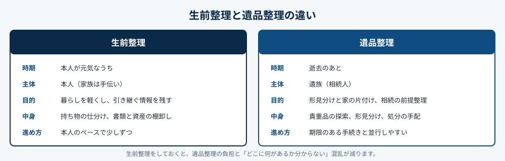

「生前整理」と「遺品整理」は、どちらも家の中を片付ける作業ですが、やる時期と主体がまったく違います。混同したまま始めると、「親が元気なうちに聞いておけばよかった」という後悔につながりやすいところです。この記事では2つの違いを整理し、本人が元気なうちに済ませておきたいこと、残すと家族が困りやすいものをまとめます。

違いは「時期」と「主体」
| 項目 | 生前整理 | 遺品整理 |
|---|---|---|
| 時期 | 本人が元気なうち | 逝去のあと |
| 主体 | 本人（家族は手伝い） | 遺族（相続人） |
| 目的 | 暮らしを軽くし、引き継ぐ情報を残す | 形見分けと家の片付け、相続の前提整理 |
| 中身 | 持ち物の仕分け、書類と資産の棚卸し、契約の一覧化 | 貴重品の探索、形見分け、処分の手配 |
| 進め方 | 本人のペースで少しずつ | 葬儀や各種手続きと並行しやすい |
最大の違いは、物の意味を本人に聞けるかどうかです。「この道具は何に使うのか」「この書類はまだ必要か」は、本人しか分かりません。遺品整理では、その判断材料がないまま遺族が決めることになります。
元気なうちにやること（生前整理の実務）
生前整理は、家全体を一気に片付けることではありません。優先度が高いのは次の3つです。
1. 書類と資産の棚卸し
預金通帳、保険証券、不動産の権利証、年金関係の書類など、「お金と権利に関わる書類」の所在を1か所にまとめます。口座や契約の一覧表を作っておくと、家族が探し回らずに済みます。
2. デジタル契約の一覧化
スマートフォンの契約、ネット銀行、サブスクリプション、ネットショッピングのアカウントなど、紙に残らない契約を一覧にします。端末のロックが解除できないと契約の存在自体が分からなくなるため、解除方法を家族がたどれる形で残しておくことが大切です。
3. 大きな家財と、思い入れの強い品の行き先
家具や家電など処分に手間がかかるものと、「これは誰かに譲りたい」という品については、本人の希望を聞いて記録しておきます。形見分けの希望が分かっていると、後の家族の話し合いが短くなります。
残すと家族が困りやすいもの
「残してはいけない」とまでは言い切れませんが、次のような状態で残ると、家族の手続きが滞りやすくなります。
- 所在の分からない現金・通帳：相続の対象になるかどうかも含め、見つけた経緯の共有が必要になり、手続きが長引きます。
- 契約内容の分からない保険・金融商品：請求の機会を逃すことがあります。証券の所在だけでも分かる状態にしておきます。
- ロックのかかったスマートフォンとパソコン：連絡先も契約も中に入ったままだと、解約や引き継ぎが進みません。
- 処分に手続きが要るもの：自動車、農機具、危険物などは、名義や処分方法の確認に時間がかかります。
- 借入や保証の書類が散らかった状態：債務の有無は相続の判断（受け取るか、放棄するか）に関わるため、期限のある手続きに影響します。
共通するのは、「物そのもの」より「情報がないこと」が困る原因だという点です。生前整理の本質は、片付けよりも情報の引き継ぎにあります。
遺品整理をすることになったら
遺品整理は、葬儀や役所の手続きと並行して進むことが多く、時間に追われがちです。順番としては、まず貴重品・重要書類の探索と形見分けを行い、相続に関わるもの（財産と債務の全体像）が見えてから処分を始めるのが安全です。全体の進め方は実家じまいの進め方の記事、量が多くて家族だけでは難しい場合の頼み方は遺品整理業者に頼む場合の記事で整理しています。
よくある質問
- 生前整理は何歳くらいから始めるのがいいですか
- 決まった年齢はありません。体力と判断力が十分にあるうちに始めるほど、本人のペースで進められます。引っ越しや子どもの独立、退職といった生活の節目に合わせて、まず書類と貴重品の棚卸しだけでも始めるのが現実的です。
- 遺品整理は家族だけでもできますか
- 荷物の量が少なく、時間に余裕がある場合は家族だけでも進められます。ただし、貴重品の探索と形見分けを先に済ませること、粗大ごみの回収日など自治体の日程を先に押さえることが前提です。量が多い場合や期限がある場合は、業者に部分的に頼む方法もあります。
- デジタル遺品とは何ですか
- スマートフォンやパソコンの中のデータ、ネット銀行やサブスクリプションなどのオンライン契約を指す言葉です。ロックが解除できず、契約の存在自体が分からないと、解約や引き継ぎが滞ることがあります。生前整理では、契約しているサービスの一覧と、端末のロック解除方法を家族がたどれる形で残しておくことが大切です。
- エンディングノートは必要ですか
- 必須ではありませんが、財産や契約の所在、連絡してほしい人の一覧を1か所にまとめる道具として役立ちます。法的効力を持つ遺言書とは別のものなので、相続の分け方など法的な指定をしたい場合は、遺言書の作成を専門家に相談してください。